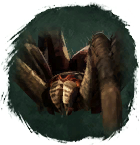

Открыть в интерактивной вики →
| Уровень | 18 |
|---|---|
| Сила (PvE) | 208 |
| Аспект арены | Yantrei |
| Здоровье | 250 |
| Мана | 680 |
| Выносливость | 600 |
Локация
- Логово Крестовика
В отряде: Крестовик (Логово Крестовика, Тоннель Крестовика)
Умения
- Кровотечение — обычная атака
- Плевок
- Боевой Клич